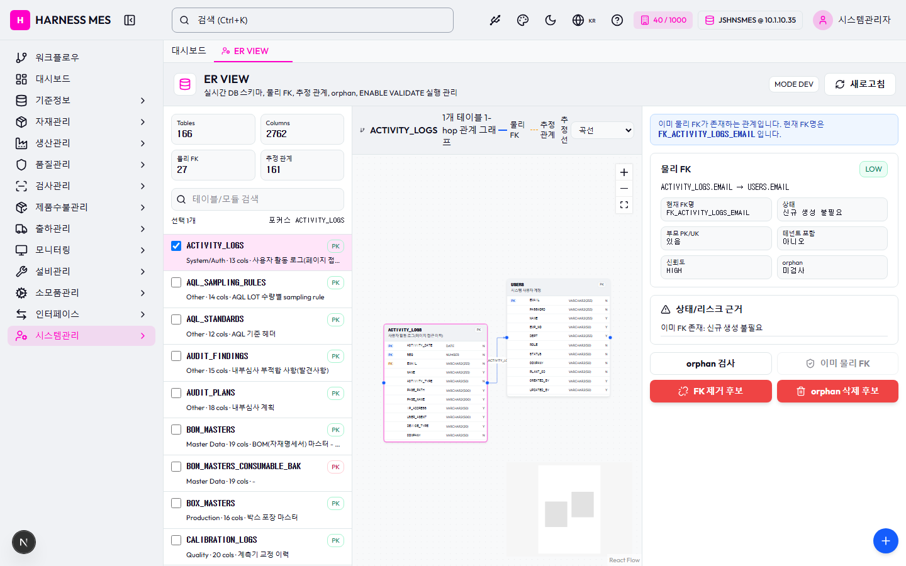

Route: /system/er-view
Status: FAIL / HTTP 200
| 기능/버튼 | 처리 방식 | 상태 | 비고 |
|---|---|---|---|
| 화면 로드 | GET /system/er-view | 실행 | HTTP 200 |
| 초기 API 호출 | 브라우저 네트워크 수집 | 실행 | 14건 |
| 🇰🇷 | 화면 버튼 목록화 | 목록화 | 후속 메뉴별 세부 시나리오 실행 대상 |
| 시스템관리자 | 화면 버튼 목록화 | 목록화 | 후속 메뉴별 세부 시나리오 실행 대상 |
| 워크플로우 | 화면 버튼 목록화 | 목록화 | 후속 메뉴별 세부 시나리오 실행 대상 |
| 대시보드 | 화면 버튼 목록화 | 목록화 | 후속 메뉴별 세부 시나리오 실행 대상 |
| 기준정보 | 화면 버튼 목록화 | 목록화 | 후속 메뉴별 세부 시나리오 실행 대상 |
| 자재관리 | 화면 버튼 목록화 | 목록화 | 후속 메뉴별 세부 시나리오 실행 대상 |
| 생산관리 | 화면 버튼 목록화 | 목록화 | 후속 메뉴별 세부 시나리오 실행 대상 |
| 품질관리 | 화면 버튼 목록화 | 목록화 | 후속 메뉴별 세부 시나리오 실행 대상 |
| 검사관리 | 화면 버튼 목록화 | 목록화 | 후속 메뉴별 세부 시나리오 실행 대상 |
| 제품수불관리 | 화면 버튼 목록화 | 목록화 | 후속 메뉴별 세부 시나리오 실행 대상 |
| 출하관리 | 화면 버튼 목록화 | 목록화 | 후속 메뉴별 세부 시나리오 실행 대상 |
| 모니터링 | 화면 버튼 목록화 | 목록화 | 후속 메뉴별 세부 시나리오 실행 대상 |
| 설비관리 | 화면 버튼 목록화 | 목록화 | 후속 메뉴별 세부 시나리오 실행 대상 |
| 소모품관리 | 화면 버튼 목록화 | 목록화 | 후속 메뉴별 세부 시나리오 실행 대상 |
| 인터페이스 | 화면 버튼 목록화 | 목록화 | 후속 메뉴별 세부 시나리오 실행 대상 |
| 시스템관리 | 화면 버튼 목록화 | 목록화 | 후속 메뉴별 세부 시나리오 실행 대상 |
| ER VIEW | 화면 버튼 목록화 | 목록화 | 후속 메뉴별 세부 시나리오 실행 대상 |
| 새로고침 | 화면 버튼 목록화 | 목록화 | 후속 메뉴별 세부 시나리오 실행 대상 |
| orphan 검사 | 화면 버튼 목록화 | 목록화 | 후속 메뉴별 세부 시나리오 실행 대상 |
| 이미 물리 FK | 화면 버튼 목록화 | 목록화 | 후속 메뉴별 세부 시나리오 실행 대상 |
| FK 제거 후보 | 화면 버튼 목록화 | 목록화 | 후속 메뉴별 세부 시나리오 실행 대상 |
| orphan 삭제 후보 | 화면 버튼 목록화 | 목록화 | 후속 메뉴별 세부 시나리오 실행 대상 |
| 전체화면 보기 | 화면 버튼 목록화 | 목록화 | 후속 메뉴별 세부 시나리오 실행 대상 |
| AI 채팅 | 화면 버튼 목록화 | 목록화 | 후속 메뉴별 세부 시나리오 실행 대상 |
| 개선요청 등록 | 화면 버튼 목록화 | 목록화 | 후속 메뉴별 세부 시나리오 실행 대상 |
| 입력 필드 | DOM 수집 | 목록화 | 168개 |
| 선택 필드 | DOM 수집 | 목록화 | 1개 |
| Method | URL | Status | OK |
|---|---|---|---|
| GET | /api/health | 200 | OK |
| GET | /api/db-info | 200 | OK |
| GET | /api/health | 200 | OK |
| GET | /api/db-info | 200 | OK |
| GET | /api/master/companies/public | 200 | OK |
| GET | /api/db-info | 200 | OK |
| GET | /api/auth/me | 200 | OK |
| GET | /api/master/com-codes/all-active | 200 | OK |
| GET | /api/system/configs/active | 200 | OK |
| GET | /api/system/comm-configs?commType=SERIAL&useYn=Y | 200 | OK |
| GET | /api/menu-categories/tree | 200 | OK |
| GET | /api/system/er-view/summary | 200 | OK |
| GET | /api/system/er-view/tables | 200 | OK |
| GET | /api/system/er-view/graph?table=ACTIVITY_LOGS&depth=1 | 200 | OK |
requestfailed: GET /api/master/companies/public/plants?company=40 net::ERR_ABORTED

H HARNESS MES 🇰🇷 40 / 1000 JSHNSMES @ 10.1.10.35 시스템관리자 워크플로우 대시보드 기준정보 자재관리 생산관리 품질관리 검사관리 제품수불관리 출하관리 모니터링 설비관리 소모품관리 인터페이스 시스템관리 대시보드 ER VIEW ER VIEW 실시간 DB 스키마, 물리 FK, 추정 관계, orphan, ENABLE VALIDATE 실행 관리 MODE DEV 새로고침 Tables 166 Columns 2762 물리 FK 27 추정 관계 161 선택 1개 포커스 ACTIVITY_LOGS ACTIVITY_LOGS PK System/Auth · 13 cols · 사용자 활동 로그(페이지 접근 이력) AQL_SAMPLING_RULES PK Other · 14 cols · AQL LOT 수량별 sampling rule AQL_STANDARDS PK Other · 12 cols · AQL 기준 헤더 AUDIT_FINDINGS PK Other · 15 cols · 내부심사 부적합 사항(발견사항) AUDIT_PLANS PK Other · 18 cols · 내부심사 계획 BOM_MASTERS PK Master Data · 19 cols · BOM(자재명세서) 마스터 - 모/자 품목 관계 BOM_MASTERS_CONSUMABLE_BAK PK Master Data · 19 cols · - BOX_MASTERS PK Production · 16 cols · 박스 포장 마스터 CALIBRATION_LOGS PK Quality · 20 cols · 계측기 교정 이력 CAPA_ACTIONS PK Other · 10 cols · CAPA(시정 예방조치) 조치 항목 CAPA_REQUESTS PK Other · 25 cols · CAPA(시정 예방조치) 요청 CHANGE_ORDERS PK Other · 26 cols · 변경관리(설계 공정 변경) 요청 COMM_CONFIGS PK Other · 20 cols · 통신 설정 (시리얼포트/TCP 등) COMPANY_MASTERS PK Master Data · 17 cols · 자사(본사) 법인 정보. 자기 회사 1건만 보유(외부 회사 아님) COM_CODES PK System/Auth · 17 cols · 공통코드 마스터 (그룹코드+상세코드 관리) CONSUMABLE_LOGS PK Other · 23 cols · 소모품 입출고 이력 로그 CONSUMABLE_MAST